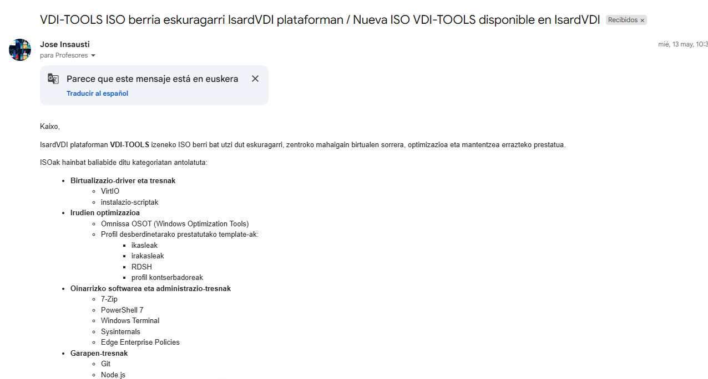
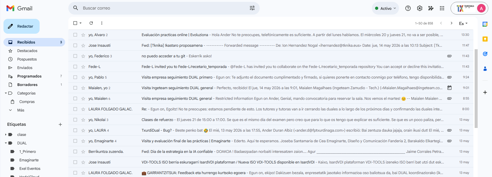
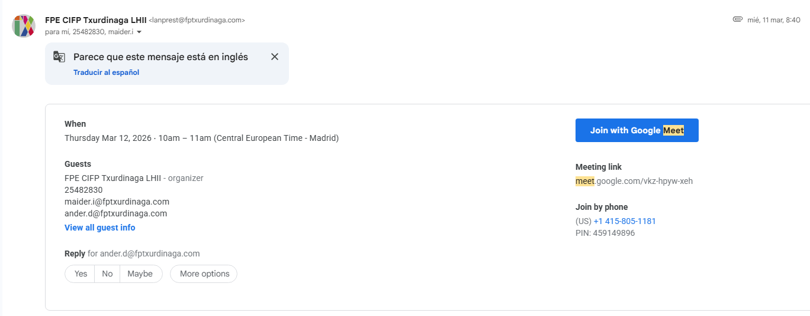
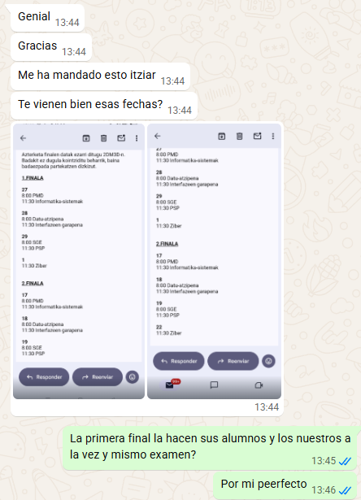

Los canales o herramientas más utilizados entre el claustro de profesores son el correo electrónico, las videoconferencias y WhatsApp.
Nuestro correo electrónico corporativo está gestionado por Gmail y usamos el dominio @fptxurdinaga.com. Es nuestro recurso básico para comunicarnos internamente y con elementos externos, ya que debido a las gestiones de distintos modelos de DUAL trabajamos mucho con las empresas y tenemos comunicación constante externa. En cuanto a la comunicación interna destacan las convocatorias a reuniones o comunicación entre docentes para comentar cuestiones de trabajo (preparación de exámenes, resultados de aprendizaje o avisos de cambios en carpetas compartidas).


Cuando necesitamos acordar una reunión de grupo pequeño para explicar algo o coordinar alguna acción, solemos convocar una videoconferencia a través de Google Meet. Estas invitaciones se envían por correo electrónico y nos permiten llevar un seguimiento síncrono del progreso del alumnado en las actividades y retos.

Para asegurar una coordinación constante y enterarnos rápido de las últimas novedades, parte de la comunicación con los compañeros de trabajo se realiza desde el móvil. De esta manera, algunas decisiones se pueden acordar rápidamente sin reservar un horario formal para reuniones. Esto facilita el trabajo cooperativo, especialmente dado que parte del equipo trabaja en turno de mañana y otra en turno de tarde.
